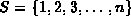
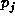
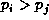
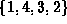
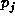
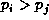
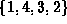
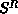
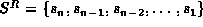
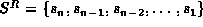

Data Structures and Algorithms
with Object-Oriented Design Patterns in C++
Data Structures and Algorithms
with Object-Oriented Design Patterns in C++
The best case running time of insertion sorting is O(n)
but the worst-case running time is  .
Therefore, we might suspect that the average running time
falls somewhere in between.
In order to determine it,
we must define more precisely what we mean by the average running time.
A simple definition of average running time is to say that it is
the running time needed to sort the average sequence.
But what is the average sequence?
.
Therefore, we might suspect that the average running time
falls somewhere in between.
In order to determine it,
we must define more precisely what we mean by the average running time.
A simple definition of average running time is to say that it is
the running time needed to sort the average sequence.
But what is the average sequence?
The usual way to determine the average running time of a sorting algorithm is to consider only sequences that contain no duplicates. Since every sorted sequence of length n is simply a permutation of an unsorted one, we can represent every such sequence by a permutation of the sequence . When computing the average running time, we assume that every permutation is equally likely. Therefore, the average running time of a sorting algorithm is the running time averaged over all permutations of the sequence S.
Consider a permutation  of the sequence S.
An inversion
in P consists of two elements,
say
of the sequence S.
An inversion
in P consists of two elements,
say  and ,
such that  but i<j.
I.e., an inversion in P is a pair of elements that are in the wrong order.
For example, the permutation  contains three inversions--(4,3), (4,2), and (3,2).
The following theorem tells us how many inversions we can expect
in the average sequence:
and ,
such that  but i<j.
I.e., an inversion in P is a pair of elements that are in the wrong order.
For example, the permutation  contains three inversions--(4,3), (4,2), and (3,2).
The following theorem tells us how many inversions we can expect
in the average sequence:
Theorem The average number of inversions in a permutation of n distinct elements is n(n-1)/4.
extbfProof Let S be an arbitrary sequence of n distinct elements and let  be the same sequence, but in reverse.
E.g., if  ,
then .
,
then .
Consider any pair of distinct elements in S,
say  and
and  where
where  .
There are two distinct possibilities:
Either
.
There are two distinct possibilities:
Either  , in which case
, in which case  is an inversion is ;
or
is an inversion is ;
or  , in which case
, in which case  is an inversion is S.
Therefore, every pair contributes exactly
one inversion either to S or to .
is an inversion is S.
Therefore, every pair contributes exactly
one inversion either to S or to .
The total number of pairs in S is  .
Since every such pair contributes an inversion either to S or to ,
we expect on average that half of the inversions will appear in S.
Therefore, the average number of inversions in a sequence of n
distinct elements is n(n-1)/4.
.
Since every such pair contributes an inversion either to S or to ,
we expect on average that half of the inversions will appear in S.
Therefore, the average number of inversions in a sequence of n
distinct elements is n(n-1)/4.
What do inversions have to do with sorting?
As a list is sorted, inversions are removed.
In fact, since the inner loop of the insertion sort routine
swaps adjacent array elements,
inversions are removed one at a time!
Since a swap takes constant time,
and since the average number of inversions is n(n-1)/4,
the average running time
for the insertion sort routine is  .
.
 Copyright © 1997 by Bruno R. Preiss, P.Eng. All rights reserved.
Copyright © 1997 by Bruno R. Preiss, P.Eng. All rights reserved.